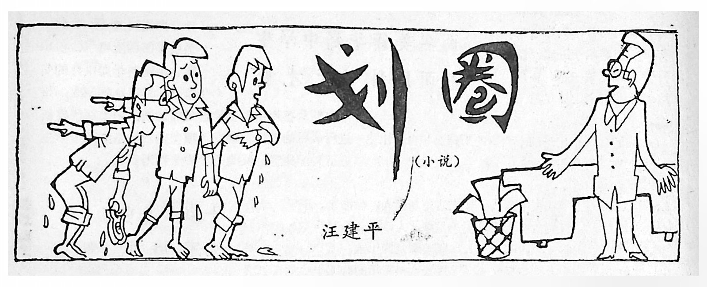

和非 《人事》1986年第6期（总第9期），第48页
划圈（题图）
Drawing Circles (header illustration)
- Passage illustrated
修建科陈科长正坐在他那特制的转椅上，审视着写字台上那张百分之三干部升资调查表。
Section Chief Chen of the Construction and Repairs Section sat in his specially made swivel chair, studying the survey form on his desk for the three-percent cadre pay rise.Opening sentence of the short story 划圈 (“Drawing Circles”) by Wang Jianping, on the same page. 汪建平《划圈》（小说）开头，同页
- Description
- Header illustration for the short story 划圈: young men point anxiously while a section chief shrugs beside a wastebasket of papers.
- Note
- In the story, Section Chief Chen decides who gets a pay rise by drawing circles next to names on a survey form.
- Artist
- He Fei 和非
- Published in
- 《人事》1986年第6期（总第9期）, p. 48
- Themes
- Paperwork and documents · Promotion · Story illustrations

Cite
He Fei, “划圈（题图）” [Drawing Circles (header illustration)], Renshi (Personnel) 《人事》, 1986, no. 6, p. 48.